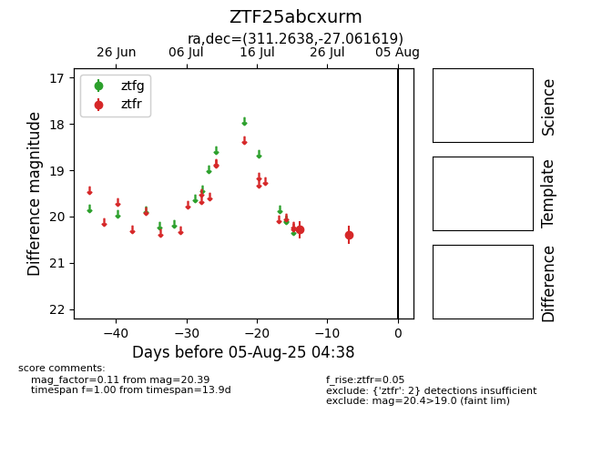

Target ZTF25abcxurm at 2025-08-05 04:38, see:
FINK: fink-portal.org/ZTF25abcxurm
Lasair: lasair-ztf.lsst.ac.uk/objects/ZTF25abcxurm
ALeRCE: alerce.online/object/ZTF25abcxurm
alt names
ZTF25abcxurm (ztf,fink)
coordinates:
equatorial (ra, dec) = (311.2638,-27.06162)
galactic (l, b) = (17.8056,-35.76465)
photometry
last ztfr=20.39
2 ztfr detections
